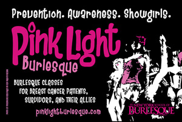

past performance | ||
|  |
Pink Light Burlesque New York School of Burlesque | |
synopsis:Pink Light Burlesque is a project that provides free classes for breast cancer patients and survivors. December 4th is our first showcase, featuring students and instructors of this program, in association with You Can Thrive. The show will be dedicated to our friend Diane Naegel, who was hoping to perform as part of the project but lost her battle with breast cancer due to complications on September 25. Our hearts go out to her and her friends and family, and to all others experiencing the same struggle. Burlesque celebrates the human drive to amuse, provoke, charm, and seduce. The goal of the Pink Light Burlesque project is to invite survivors to take classes to experience the joyous and body-loving fun so many burlesque students embrace. For those who would like to perform, we hope to create a performing troupe of burlesque dancers made up of breast cancer patients and survivors (and a few of their allies). If they wish to continue beyond the classes, these dancers may perform professionally as well as to benefit charity and fund raising events. We want to give these students the benefit of working with our resources. As one of the longest-running burlesque schools in the world, we have benefited hugely from the international burlesque community, and we want to share that network with people who are experiencing the challenges of cancer treatment and recovery. We will be running free classes for breast cancer patients and survivors during the months of October and November. Please contact us to findout how to participate. If you are interested in helping, taking classes, or performing, email pinklight@schoolofburlesque.com. Lead Contact: Jo Weldon | ||
upcoming performances |
|||
 |
|||
| EVQ Film Festival 2018 August 20-25 |
|||
performance archives |
|||
| 2018 | 2017 | 2016 | 2015 |
| 2014 | 2013 | 2012 | 2011 |
| 2010 | 2009 | 2008 | 2007 |